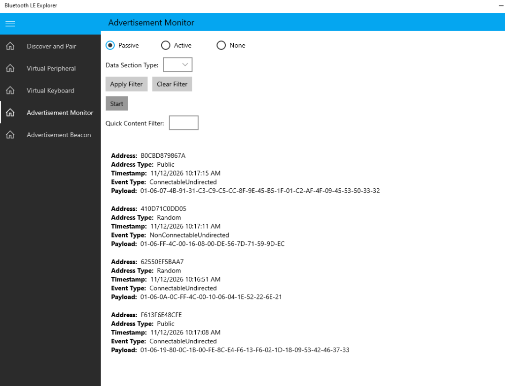

⚠️ Règle de Câblage Impérative sur le Support ASX00061
Ne jamais brancher le module Bluetooth sur le connecteur Grove J4 (UART D0/D1) : les broches D0/D1 sont directement couplées au convertisseur USB de l'Arduino Nano. Tout branchement sur J4 crée un conflit matériel rendant impossible le téléversement de programmes et l'utilisation de la console série du PC.
Solution retenue : Le module Bluetooth Grove est raccordé sur le port J7 (A0 / A1). Sur l'ATmega328P, les broches A0 et A1 sont de véritables entrées/sorties numériques (PORT C) supportant les interruptions de changement d'état (PCINT) nécessaires à la bibliothèque SoftwareSerial.
📋 DOCUMENT 1 : FICHE TRAVAIL DEMANDÉ (Activités Pratiques)
Cette fiche synthétique définit le cahier des charges opérationnel des 8 étapes pratiques à mener en binôme. Vous devez implémenter les configurations, relever les mesures radiofréquences et énergétiques, et consigner vos résultats dans la Fiche Questions associée (Document 2).
Étape 1 : Passerelle Série Arduino Nano & Module Grove Bluetooth v3.0Bluetooth Classic • Hardware
Objectif : Établir une passerelle bidirectionnelle (MultiSerial) entre la console USB du PC et le module sans fil Grove Bluetooth v3.0 raccordé sur la carte porteuse ASX00061.
Enfichez l'Arduino Nano sur la platine support ASX00061. Vérifiez que l'interrupteur S1 est positionné sur 5V.
Raccordez le module Grove - Serial Bluetooth v3.0 sur le connecteur Grove J7 (A0 / A1).
Déclarez la liaison série logicielle Serial1 (ou BT_Serial) avec SoftwareSerial sur les broches A1 (RX) et A0 (TX) :
Pin 1 du port J7 (Fil Jaune) → broche A0 Nano reliée au RX du module (l'Arduino émet).
Pin 2 du port J7 (Fil Blanc) → broche A1 Nano reliée au TX du module (l'Arduino reçoit).
Développez le programme passerelle :
Liaison USB matérielle Serial configurée à 115200 bauds.
Liaison série logicielle Serial1 configurée à 9600 bauds (vitesse d'usine CSR BC417).
Redirection bidirectionnelle transparente : Serial ↔ Serial1.
📦 Livrable attendu :
Code source fonctionnel téléversé sur le Nano. Ouverture du Moniteur Série Arduino (115200 bauds) et vérification du pont de communication.
Étape 2 : Configuration & Audit par Commandes AT du Module BluetoothCommandes AT • Configuration
Objectif : Configurer et auditer les paramètres radiofréquences du module Grove Bluetooth v3.0 en mode commande AT non appairé (LED d'état clignotante).
Réglage impératif du terminal : Sélectionner impérativement No line ending (Pas de fin de ligne) dans le Moniteur Série. Le contrôleur CSR BC417 rejette tout caractère \r ou \n en fin de commande.
Exécutez la séquence de commandes AT suivantes et relevez les réponses :
Commande AT
Action & Syntaxe
Réponse attendue / Format
AT
Test de communication de base
OK
AT+VERSION
Interrogation du firmware embarqué
Ex: +VERSION=2.0... ou version Seeed
AT+ADDR? ou AT+LADDR
Relevé de l'adresse MAC matérielle unique (BD_ADDR)
12 caractères hexadécimaux (ex : 0013,EF,001234)
AT+NAME<Nom>
Renommer le module avec votre identifiant de binôme
Ex: AT+NAMECIEL_B1 → Réponse OKsetname
AT+PIN<Code>
Définir le code secret d'appairage (4 chiffres)
Ex: AT+PIN1234 → Réponse OKsetPIN
AT+ROLE0
Forcer le rôle Esclave (Slave) (valeur par défaut)
+ROLE=0 ou OK
📦 Livrable attendu :
Relevé complet des paramètres d'usine et personnalisés (Nom, PIN, MAC BD_ADDR) sur la Fiche Questions.
Étape 3 : Déclaration de l'ESP32 & Scanner RSSI Bluetooth ClassicESP32 • Scan RF
Objectif : Configurer l'environnement de développement pour la carte ESP32 Plus (Keyestudio WROOM-32) et implémenter un scanner Bluetooth Classic pour détecter les modules Nano et mesurer leur niveau de réception (RSSI).
Configuration dans l'Arduino IDE :
Dans les préférences, vérifiez l'URL de package de cartes ESP32 : https://espressif.github.io/arduino-esp32/package_esp32_index.json.
Sélectionnez la carte : ESP32 Dev Module (ou DOIT ESP32 DEVKIT V1).
Réglez : Upload Speed : 921600, CPU Frequency : 240 MHz, Port COM correspondant au câble USB-C.
Programme de scan Bluetooth Classic :
Exploitez la bibliothèque BluetoothSerial.h pour exécuter une recherche inquiry GAP et afficher pour chaque périphérique détecté :
Nom du périphérique (ex : CIEL_B1).
Adresse MAC (BD_ADDR).
Puissance reçue RSSI (en dBm).
📦 Livrable attendu :
Capture de la console série de l'ESP32 listant l'ensemble des modules Bluetooth de la salle avec leur RSSI.
Objectif : Comprendre la signification physique du RSSI, documenter ses ordres de grandeur types à l'aide d'une recherche Internet, puis quantifier expérimentalement l'atténuation à 2,4 GHz selon la distance et les obstacles.
🌐 Recherche documentaire Internet & Illustration préalable :
Avant d'entamer les relevés sur le terrain, effectuez une recherche sur le Web (documentation technique Bluetooth SIG, constructeurs Texas Instruments / Nordic Semiconductor / Espressif, articles académiques sur la propagation RF) pour :
Définir la grandeur RSSI (unité, référence physique en milliwatts et conversion logarithmique en dBm).
Établir l'échelle normalisée de qualité de signal pour une liaison Bluetooth / Wi-Fi (de l'excellent à la perte de liaison).
Rechercher ou schématiser une illustration graphique explicative montrant l'allure de la courbe de décroissance du RSSI en fonction de la distance, les zones de couverture et la sensibilité minimale du récepteur (SRX).
Protocole expérimental de mesures sur l'ESP32 :
Profil 1 : Propagation en champ libre (Line-of-Sight - LoS) : Relevez le RSSI moyen (sur 5 trames consécutives) à 1 m, 3 m, 5 m, 10 m et 15 m.
Profil 2 : Atténuation par obstacles à 5 mètres (Non-Line-of-Sight - NLoS) : Mesurez l'affaiblissement provoqué par :
Une cloison sèche (plaque de plâtre / placo alvéolaire).
Un mur porteur (béton armé ou brique pleine).
Un écran métallique continu (feuille d'aluminium ou armoire métallique → effet cage de Faraday).
L'interposition du corps d'un équipier (absorption diélectrique par l'eau corporelle à 2,4 GHz).
📦 Livrables attendus :
Synthèse de la recherche Internet, illustration graphique du RSSI collée/tracée et tableau de mesures complété dans la Fiche Questions (Partie B).
Étape 5 : Métrologie Énergétique en Bluetooth Classic (Repos vs Émission)Énergie • Shunt / INA219
Objectif : Mesurer avec précision le profil de consommation électrique du nœud émetteur (Nano + Grove BT) à l'état de repos et lors d'émissions radiofréquences continues.
Méthode A (Automatisée via bus I²C) : Intercalez un capteur de courant numérique INA219 (shunt 0,1 Ω, adresse I²C 0x40 sur A4/A5) sur la ligne d'alimentation 5V du module Bluetooth.
Méthode B (Shunt externe & Voltmètre/AD3) : Intercalez une résistance de précision Rshunt = 1 Ω en série sur la ligne VCC (ou masse), et mesurez la chute de tension ΔU pour en déduire I = ΔU / R.
États à caractériser sous une tension régulée de 5,0 V :
Repos non connecté : Module en attente d'appairage (LED clignotante).
Repos connecté : Liaison SPP établie avec l'ESP32, sans transfert de données (LED fixe).
Émission continue : Envoi cadencé de trames de télémétrie de 64 octets à cadence maximale.
📦 Livrable attendu :
Relevé des courants moyens (Imoyen en mA) et calcul de la puissance active dissipée (P = U × I en mW).
Étape 6 : Collecte Séquentielle Multi-Nœuds en Bluetooth Classic (5 Esclaves → 1 Maître)Bluetooth Classic • Architecture Réseau
Objectif : Réaliser une station de télémétrie centralisée sur l'ESP32 capable d'interroger successivement 5 maquettes Arduino Nano esclaves réparties dans la salle.
Contrainte architecturale du Bluetooth Classic SPP : Une liaison SPP (RFCOMM) est strictement point-à-point. Un esclave connecté ne peut pas répondre à un autre équipement. Pour collecter 5 modules restant en mode esclave standard (AT+ROLE0), le concentrateur maître (ESP32) doit gérer une interrogation séquentielle cyclique (polling temporel).
Démarche algorithmique à mettre en œuvre sur l'ESP32 :
Définir dans le code un tableau contenant les 5 adresses MAC des nœuds Nano : uint8_t slavesMAC[5][6] = { {0x00,0x13,0xEF,...}, ... };
Dans la boucle principale, pour chaque esclave i de 1 à 5 :
Connexion :SerialBT.connect(slavesMAC[i]); (attendre la validation de la liaison, timeout 4 s).
Interrogation : Envoyer la commande d'invite "GET_DATA\n".
Réception : Lire la réponse textuelle renvoyée par le Nano et l'horodater.
Déconnexion : Fermer immédiatement le lien : SerialBT.disconnect();.
Garde temporelle : Marquer un délai de repos de 300 ms pour permettre la désynchronisation physique du canal radio.
📦 Livrable attendu :
Journal de bord série de l'ESP32 démontrant la collecte réussie et chronométrée des données des 5 modules de la salle.
Étape 7 : Déploiement en Bluetooth Low Energy (BLE) & Analyse sur Bluetooth LE Explorer (Windows)BLE • Profil GATT • Windows
Objectif : Programmer l'ESP32 en serveur GATT BLE (exemple BLE_notify), décoder ses trames de balisage publicitaire (*Advertising*), contourner le piège du cache Bluetooth de Windows et souscrire aux notifications en direct.
7.1. Programmation de l'ESP32 (Exemple IDE Arduino BLE_notify) :
Ouvrez dans l'IDE Arduino l'exemple officiel : Fichier → Exemples → ESP32 BLE Arduino → BLE_notify.
Personnalisez le nom du nœud dans le setup() afin de l'identifier immédiatement dans la salle : BLEDevice::init("ESP32_B1"); // Remplacez B1 par votre numéro de binôme
Téléversez le programme sur votre carte ESP32 Plus. Le microcontrôleur crée un service (UUID 4fafc201-1fb5-459e-8fcc-c5c9c331914b) et une caractéristique notifiable (UUID beb5483e-36e1-4688-b7f5-ea07361b26a8) avec descripteur CCCD (BLE2902).
7.2. Analyse du balisage publicitaire (Advertisement Monitor) :
Lancez l'application officielle Microsoft Bluetooth LE Explorer (disponible sur le Microsoft Store) et sélectionnez l'onglet Advertisement Monitor :

Figure 7.1 : Détection de la trame publicitaire de l'ESP32 dans l'Advertisement Monitor
Comment reconnaître à coup sûr la trame de votre ESP32 dans la liste ?
Adresse MAC (BT Address) : Format physique 48 bits (ex : B0CBD879867A).
Décodage ASCII du nom dans la Payload : Observez la séquence d'octets finale ...-09-45-53-50-33-32.
Le champ 09 correspond au drapeau normalisé Complete Local Name. Les valeurs hexadécimales représentent le code ASCII de "ESP32" :
45 ('E'), 53 ('S'), 50 ('P'), 33 ('3'), 32 ('2').
UUID du Service en Little-Endian : Les 16 octets précédant le nom (4B-91-31-C3-...-AF-4F) correspondent rigoureusement à l'identifiant 128 bits de votre service 4fafc201-1fb5-... transmis octet de poids faible en tête.
7.3. Connexion GATT, Résolution du Cache Windows & Visualisation des Échanges :
Pour vous connecter et visualiser la variable incrémentée en direct par l'ESP32 :
Dans le menu de gauche de Bluetooth LE Explorer, basculez sur l'onglet Discover and Pair.
Sélectionnez votre ESP32 dans la liste et cliquez sur Pair / Connect.
⚠️ Piège classique sous Windows : Le Cache de la table GATT !
Si la page Device Services Page n'affiche que 2 services (uniquement les services génériques GenericAttribute 0x1801 et GenericAccess 0x1800), Windows a conservé en cache une ancienne arborescence et ne voit pas encore votre service personnalisé !
Procédure de déblocage rapide :
Ouvrez les Paramètres Windows → Bluetooth et appareils.
Dans la rubrique Autres appareils, cliquez sur votre périphérique ESP32 (Connecté).
Cliquez sur le bouton Supprimer le périphérique (confirmez par Oui).
Appuyez sur le bouton physique RESET (EN) de la carte ESP32.
Retournez dans Bluetooth LE Explorer, relancez la découverte et reconnectez-vous.
Cette fois, le compteur indique Number of Services: 3 et le service personnalisé apparaît :
Figure 7.2 : Apparition du service 4fafc201... et de la caractéristique beb5483e... (Handle 41)
Où cliquer pour observer les données transmises ?
Dans la section inférieure Service Name: 4fafc201-1fb5-459e-8fcc-c5c9c331914b, cliquez directement sur la ligne de la caractéristique : Characteristic Name: beb5483e-36e1-4688-b7f5-ea07361b26a8.
La page dédiée à la caractéristique s'ouvre. Cliquez sur le bouton Subscribe to notifications (ou activez la case Notify).
Observation : Le champ Value (représentation binaire/hexadécimale du compteur 32 bits de l'ESP32) s'actualise sous vos yeux en temps réel toutes les 500 ms !
7.4. Déploiement Multi-Nœuds : 3 Solutions pour s'abonner / observer plusieurs ESP32 simultanément
L'application Bluetooth LE Explorer est un outil d'inspection unitaire (une seule connexion active à la fois). Dans un atelier ou une salle de classe où plusieurs binômes émettent, 3 approches permettent de superviser simultanément tous les ESP32 :
Solution A : Mode Diffusion sans connexion (*Advertising / Manufacturer Data*) dans Bluetooth LE Explorer
Au lieu d'établir des connexions point-à-point, chaque ESP32 insère ses données directement dans ses paquets de publicité (via setManufacturerData(...)). Sur le PC, dans l'onglet Advertisement Monitor de Bluetooth LE Explorer, toutes les trames de la salle défilent et se rafraîchissent en même temps, sans aucune limite de connexions et sans nécessiter d'appairage.
Solution B : Multi-connexions sur application mobile (*nRF Connect for Mobile* - Android / iOS)
L'application gratuite nRF Connect for Mobile (développée par Nordic Semiconductor) gère nativement le multi-lien. Vous pouvez lancer un scan, cliquer sur Connect pour le premier ESP32, puis revenir sur l'onglet Scanner et vous connecter au deuxième et au troisième sans couper les liaisons existantes. L'application ouvre un onglet distinct par équipement (jusqu'à 7 à 8 connexions simultanées selon la puce radio du smartphone) où vous pouvez activer les notifications en parallèle.
Solution C : Concentrateur logiciel Python multi-clients avec la bibliothèque bleak
Sur PC Windows, la bibliothèque Python asynchrone bleak (installation : pip install bleak) permet de gérer un pool de connexions simultanées via asyncio. Un script Python centralise les flux de notification de tous les ESP32 de la salle dans une même console :
import asyncio
from bleak import BleakClient
# Adresses MAC des ESP32 de la salle (relevées au préalable)
SERVEURS_ESP32 = [
{"nom": "Binôme 1", "mac": "B0:CB:D8:79:86:7A"},
{"nom": "Binôme 2", "mac": "40:22:D8:34:12:05"},
{"nom": "Binôme 3", "mac": "84:CC:A8:11:99:4F"},
]
CHAR_UUID = "beb5483e-36e1-4688-b7f5-ea07361b26a8"
def creer_callback(nom):
return lambda sender, data: print(f"[{nom}] Valeur reçue = {int.from_bytes(data, 'little')}")
async def ecoute_noeud(noeud):
async with BleakClient(noeud["mac"]) as client:
await client.start_notify(CHAR_UUID, creer_callback(noeud["nom"]))
while True:
await asyncio.sleep(1)
async def main():
# Connexion asynchrone concurrente vers tous les serveurs BLE
await asyncio.gather(*(ecoute_noeud(n) for n in SERVEURS_ESP32))
asyncio.run(main())
7.5. Supervision Industrielle & Tableau de Bord IoT avec Node-RED
Pour valoriser ces mesures dans un contexte industriel (Industrie 4.0), les flux BLE multi-nœuds peuvent être acheminés vers un Dashboard Web temps réel conçu avec Node-RED.
Grandes lignes de la mise en œuvre technique :
Passerelle BLE → MQTT (Gateway Edge) : Le script Python précédent (basé sur bleak) est enrichi avec le client paho-mqtt. À chaque notification reçue, il formate un message JSON (ex: {"id": "B1", "valeur": 42, "rssi": -65}) et le publie sur un broker MQTT local (ex : Mosquitto sur le port 1883) sous le topic ciel/atelier/binome1.
Ingestion et traitement dans Node-RED :
Un nœud mqtt in souscrit au topic générique ciel/atelier/+ pour intercepter les trames de tous les binômes.
Un nœud json désérialise la chaîne reçue en objet JavaScript.
Un nœud switch ou function aiguille les grandeurs vers les interfaces graphiques dédiées.
Restitution graphique (Node-RED Dashboard) :
Nœuds ui_gauge : affichage de la valeur instantanée ou du niveau RSSI sous forme de jauge à cadran.
Nœuds ui_chart : tracé de l'historique temporel des données pour observer les tendances et dérives.
Nœuds ui_template : tableau synoptique de l'état de santé (en ligne / hors-ligne) de tous les modules de la classe.
Accès opérateur : Le tableau de bord est immédiatement accessible sur tout navigateur réseau à l'adresse http://localhost:1880/ui.
Capture d'écran de la caractéristique en cours de notification dans Bluetooth LE Explorer montrant les valeurs hexadécimales reçues en direct.
Étape 8 : Caractérisation Énergétique en Bluetooth Low Energy (BLE)Énergie • Profilage BLE
Objectif : Relever le profil de consommation dynamique en technologie BLE et mettre en évidence la réduction drastique de consommation par rapport au Bluetooth Classic.
Mesurez le courant consommé par l'ESP32 dans les conditions suivantes :
Phase de balisage publicitaire (Advertising) : Mesurez le courant moyen entre deux impulsions publicitaires (avec un intervalle d'annonce de 500 ms).
Phase Connectée en veille (Connection Event) : Liaison BLE établie avec Windows, notifications inactives.
Phase de Notification active : Envoi d'une notification périodique toutes les 1 seconde.
À l'aide de l'Analog Discovery 3 ou d'un oscilloscope numérique, visualisez les impulsions ultra-brèves de transmission radio (crêtes de quelques millisecondes).
📦 Livrable attendu :
Chronogramme ou relevé de courant moyen en BLE (IBLE en mA) et comparaison avec le mode Classic.
Étape 9 : Étude Comparative Systémique : Bluetooth Classic (SPP) vs Bluetooth Low Energy (BLE)Synthèse • Ingénierie
Objectif : Rédiger la synthèse technologique et justifier les choix d'architecture réseau à l'aide des résultats expérimentaux acquis lors des étapes 1 à 8.
Complétez la matrice d'évaluation comparative dans la Fiche Questions en confrontant :
La complexité de raccordement et de programmation.
Le débit utile effectif et la latence d'établissement de liaison.
La consommation énergétique globale et l'autonomie estimée sur batterie Li-Po 1200 mAh.
La topologie réseau adaptée à la collecte de capteurs multiples (connexions point-à-point exclusives vs diffusion par balisage / piconet BLE).
📦 Livrable attendu :
Synthèse comparative dûment argumentée dans la Fiche Questions (Document 2).
✍️ DOCUMENT 2 : FICHE QUESTIONS & BILAN TECHNIQUE (Évaluation)
📝 Consignes pour l'Étudiant
Cette fiche d'évaluation est à compléter individuellement ou en binôme tout au long du déroulement des activités pratiques. Renseignez l'intégralité des mesures demandées, justifiez vos réponses par des arguments techniques rigoureux (termes normatifs, formules et unités) et soignez la clarté de vos raisonnements.
NOM Prénom Étudiant 1 : .............................................................. | Étudiant 2 : .............................................................. | Date : ....................
Partie A : Architecture Matérielle, Bus Série & Commandes AT (Étapes 1 & 2)
Question A.1 : Sur la platine support Arduino Nano Connector Carrier (ASX00061), expliquez précisément pourquoi le connecteur J4 (UART) ne peut pas être utilisé pour dialoguer avec le module Bluetooth lorsque le Nano est raccordé en USB à un PC. Détaillez les conséquences matérielles sur la programmation (bootloader) et sur la surveillance console.
Question A.2 : En vous référant à l'architecture interne du microcontrôleur ATmega328P, justifiez pourquoi les broches repérées A0 et A1 du connecteur Grove J7 peuvent fonctionner avec la bibliothèque SoftwareSerial. À quel port interne (PORT B, C ou D) appartiennent-elles ? Quel mécanisme matériel précis permet d'intercepter le bit de Start d'un octet entrant ?
Question A.3 : Complétez le tableau d'audit des paramètres relevés lors de l'exécution des commandes AT sur votre module Grove Bluetooth v3.0 :
Paramètre
Commande AT envoyée
Réponse brute du module
Signification technique / Valeur retenue
Adresse MAC (BD_ADDR)
....................
........................................
Identifiant physique unique sur 48 bits (IEEE 802.15.1)
Nom personnalisé
....................
........................................
Nom d'annonce visible par les scanners
Code PIN de sécurité
....................
........................................
Clé d'appairage pour chiffrement de liaison (Legacy Pairing)
Rôle réseau
....................
........................................
0 = Esclave (Slave) / 1 = Maître (Master)
Débit série UART
....................
........................................
Vitesse de communication avec l'ATmega328P (bauds)
Question A.4 : Pourquoi la configuration du terminal en mode No line ending est-elle critique pour ce module ? Que se produit-il techniquement si l'on envoie la séquence \r\n (CR+LF) ?
Partie B : Recherche Documentaire, Métrologie RF & Modélisation du RSSI (Étapes 3 & 4)
Question B.1 (Recherche documentaire Internet sur le RSSI) :
À l'aide d'une recherche sur Internet, explicitez la définition physique exacte du RSSI (*Received Signal Strength Indicator*) :
Donnez la relation mathématique permettant de convertir une puissance reçue Pr exprimée en milliwatts (mW) en décibels-milliwatts (dBm) :
PdBm = 10 × log10(Pr / 1 mW)
Pourquoi la valeur du RSSI mesurée sur un récepteur radio est-elle quasi-systématiquement négative en pratique ? Calculez la valeur en dBm correspondant à une puissance reçue de 1 μW (10-6 W) puis 1 nW (10-9 W).
Complétez l'échelle normalisée de qualité de signal ci-dessous :
Plage de RSSI
Qualification du signal
Comportement de la liaison Bluetooth
≥ -50 dBm
Excellente (Proximité immédiate)
Débit maximal, zéro perte de paquet, consommation RF optimisée
-50 dBm à -70 dBm
Bonne / Nominale
Liaison parfaitement stable pour flux SPP ou BLE
-70 dBm à -85 dBm
Moyenne / Dégradée
Augmentation du taux d'erreur binaire (BER), retransmissions fréquentes
< -90 dBm
Critique / Décrochage
Limite de sensibilité (SRX), déconnexion imminente de la liaison
Indiquez les URL ou références des 2 sources techniques consultées lors de votre recherche :
Question B.2 (Illustration et analyse de la courbe théorique de propagation) :
Le schéma ci-dessous illustre la courbe théorique de décroissance du RSSI en fonction de la distance, avec les seuils de qualité de réception et le bruit de fond thermique :
Figure : Modélisation théorique de l'affaiblissement logarithmique du RSSI avec zones de couverture radio (2,4 GHz)
Travail d'analyse demandé :
En observant l'allure de la courbe, expliquez pourquoi la perte de signal (en dBm) est très brutale sur les premiers mètres (de 1 m à 3 m), puis semble « s'adoucir » aux distances plus éloignées (de 10 m à 15 m). Quel est l'impact de l'échelle logarithmique ?
Dans l'encadré ci-dessous, collez une illustration ou schéma représentatif issu de votre propre recherche Internet (ex : zones de Fresnel, modèle avec atténuation d'obstacles ou diagramme de rayonnement d'une antenne PCB) et rédigez un court commentaire explicatif :
[ Emplacement pour l'illustration issue de votre recherche Internet & commentaire ]
Question B.3 (Relevés expérimentaux) : Renseignez vos mesures expérimentales de RSSI relevées avec l'ESP32 :
Configuration d'essai
Distance réelle (m)
Obstacle interposé
RSSI moyen mesuré (dBm)
Champ libre (LoS)
1 m (Référence d0)
Aucun
............... dBm
Champ libre (LoS)
3 m
Aucun
............... dBm
Champ libre (LoS)
5 m
Aucun
............... dBm
Champ libre (LoS)
10 m
Aucun
............... dBm
Champ libre (LoS)
15 m
Aucun
............... dBm
Obstacle 1 (NLoS)
5 m
Cloison plâtre (Placo)
............... dBm
Obstacle 2 (NLoS)
5 m
Mur béton armé
............... dBm
Obstacle 3 (NLoS)
5 m
Blindage métallique (Alu)
............... dBm
Obstacle 4 (NLoS)
5 m
Corps humain interposé
............... dBm
Question B.4 : Le modèle théorique de propagation logarithmique en espace libre s'écrit :
RSSI(d) = RSSI(d0) - 10 × n × log10(d / d0)
En prenant votre mesure à d0 = 1 m comme référence, calculez le coefficient d'atténuation de trajectoire n obtenu expérimentalement à la distance de 10 m. Comparez cette valeur au coefficient théorique de l'espace libre (n = 2) et commentez les écarts observés dans la salle de cours (réflexions, évanouissements multitrajets).
Question B.5 (Analyse physique des obstacles) : Pourquoi l'obstacle métallique et l'obstacle humain entraînent-ils une dégradation particulièrement sévère du niveau de signal à la fréquence de 2,4 GHz ? Justifiez par deux phénomènes physiques distincts.
Partie C : Architecture Réseau Multi-Nœuds en Bluetooth Classic (Étape 6)
Question C.1 : Dans un réseau Bluetooth Classic basé sur le profil SPP (Serial Port Profile / RFCOMM), quelle est la contrainte topologique majeure qui empêche un concentrateur maître d'écouter simultanément 5 capteurs esclaves sans rupture de liaison ?
Question C.2 : Représentez ci-dessous sous forme d'un diagramme de séquence temporel (ou chronogramme fonctionnel) l'enchaînement des étapes exécutées par l'ESP32 pour collecter successivement les modules de 2 binômes (Binôme A puis Binôme B) : Faites apparaître les phases : Connexion SPP, Envoi de requête, Réception données, Déconnexion, Délai de garde inter-connexion.
Question C.3 : Quel est le temps total mesuré pour effectuer un cycle complet de collecte des 5 maquettes esclaves de la salle ? Si un des modules est éteint ou hors de portée, quel comportement logiciel préventif (Watchdog / Timeout) doit impérativement être implémenté sur l'ESP32 pour éviter le blocage de la chaîne de mesure ?
Partie D : Métrologie Énergétique & Bilan de Consommation (Étapes 5 & 8)
Question D.1 : Renseignez les valeurs de courant mesurées sur l'alimentation 5,0 V :
Technologie & État opérationnel
Courant mesuré I (mA)
Puissance dissipée P = U × I (mW)
Observations sur la dynamique du courant
Bluetooth Classic : Veille non connectée
............... mA
............... mW
Clignotement périodique de la LED d'état
Bluetooth Classic : Connecté repos (SPP)
............... mA
............... mW
Canal RF synchronisé permanent
Bluetooth Classic : Émission continue
............... mA
............... mW
Amplificateur RF de puissance actif en permanence
BLE (ESP32) : Advertising (Balisage 500 ms)
............... mA
............... mW
Impulsions brèves entrecoupées de veille
BLE (ESP32) : Connecté avec Notifications
............... mA
............... mW
Transmission synchrone par paquets GATT
Question D.2 : Un capteur autonome de télé-surveillance industrielle est alimenté par une batterie Li-Po de tension moyenne 3,7 V et de capacité utile C = 1200 mAh (soit une énergie embarquée E = 4,44 Wh).
• Hypothèse 1 : Utilisation en Bluetooth Classic SPP permanent :
Le module consomme un courant constant moyen de 35 mA sous 5V (fourni via un régulateur à découpage de rendement η = 85 %).
Calculez le courant moyen soutiré à la batterie Ibat et l'autonomie théorique correspondante (en heures et en jours) :
• Hypothèse 2 : Utilisation en Bluetooth Low Energy (BLE) :
Le nœud transmet une notification une fois par minute (Iactive = 20 mA pendant 15 ms), et se place en veille profonde (Deep Sleep, Isleep = 15 μA) le reste du temps.
Calculez le courant moyen équivalent Imoyen sur une période de 60 secondes et l'autonomie théorique résultante :
Imoyen = [(Iactive × tactive) + (Isleep × tsleep)] / T = .................................................. μA
⇒
Autonomie = C / Imoyen = .................................................. jours (........... années)
Concluez sur la viabilité d'un réseau de capteurs autonomes scellés en maintenance zéro.
Partie E : Architecture BLE, Profil GATT & Synthèse Comparative (Étapes 7, 8 & 9)
Question E.1 (Architecture BLE, GAP & GATT) : Dans l'architecture Bluetooth Low Energy, explicitez les rôles des couches logiques normalisées suivantes :
GAP (Generic Access Profile) : Rôles de Broadcaster (Diffuseur), Observer (Observateur), Peripheral (Périphérique) et Central (Central). Quel rôle a été attribué à l'ESP32 et quel rôle a été attribué au PC Windows lors de l'étape 7 ?
GATT (Generic Attribute Profile) : Définissez la hiérarchie entre Profil, Service et Caractéristique. Pourquoi utilise-t-on des identifiants UUID sur 128 bits pour les services personnalisés, alors que les services standards (ex: Generic Access 0x1800) n'utilisent que 16 bits ?
Modes de transfert GATT : Quelle est la différence fondamentale entre une lecture par scrutation (READ / POLL) et un mécanisme d'alerte événementiel par NOTIFICATION ? En quoi la notification est-elle plus économe en énergie pour un capteur sur batterie ?
Question E.2 (Analyse de la trame de balisage & du cache GATT Windows) :
Lors de la mise en œuvre de l'étape 7 avec l'application Bluetooth LE Explorer :
Dans la capture de l'Advertisement Monitor (Figure 7.1), la charge utile (Payload) reçue de l'ESP32 se termine par la suite hexadécimale : ... 09 - 45 - 53 - 50 - 33 - 32.
En consultant la table ASCII, justifiez la correspondance exacte entre ces octets et le nom configuré dans le programme Arduino (BLEDevice::init(...)). Quel est le rôle du tag 0x09 ?
Pourquoi les identifiants UUID 128 bits (comme 4fafc201-1fb5-459e-8fcc-c5c9c331914b) apparaissent-ils avec l'ordre des octets inversé dans la trame radio brute (4B-91-31-C3-...-AF-4F) ? Quel nom donne-t-on à cette convention d'ordonnancement des octets ?
Pourquoi Windows conserve-t-il la table des services GATT en mémoire cache lors des reconnexions ? Pourquoi est-il indispensable de supprimer le périphérique dans les paramètres Windows si l'on modifie la structure des caractéristiques dans le code de l'ESP32 ?
Question E.3 : Complétez la matrice de synthèse comparative entre le Bluetooth Classic (BR/EDR - SPP) et le Bluetooth Low Energy (BLE) :
Question E.4 (Synthèse d'ingénierie BTS CIEL) : Un client industriel vous consulte pour concevoir le réseau sans fil d'un atelier d'usinage surveillant la température et les vibrations de 50 machines-outils (émission d'une mesure de 4 octets toutes les 10 secondes par machine).
En vous basant sur l'ensemble de vos résultats expérimentaux, justifiez de façon argumentée la technologie à prescrire (Classic ou BLE). Mettez en avant les contraintes d'autonomie des piles, le temps de cycle de collecte et la robustesse globale du réseau.